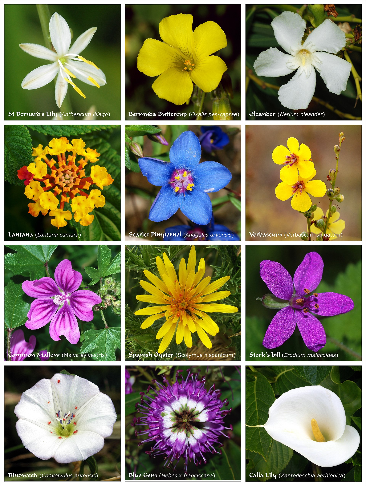
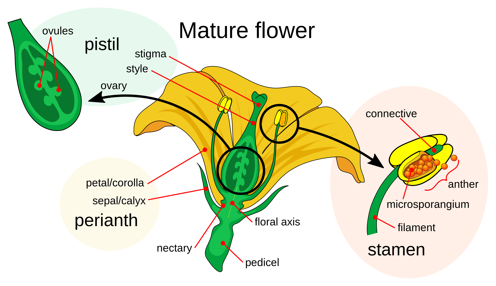
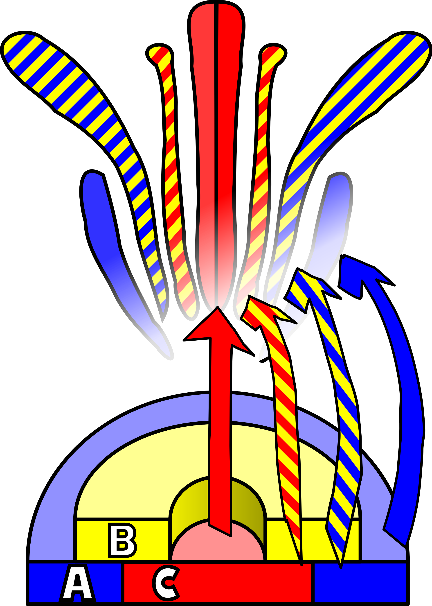

Flower
For other uses, see Flower (disambiguation).
"Floral" redirects here. For other uses, see Floral
(disambiguation).
A flower, also known as a bloom or blossom, is the reproductive structure found in flowering plants (plants of the division Angiospermae). Flowers consist of a combination of vegetative organs - sepals that enclose and protect the developing flower, petals that attract pollinators, and reproductive organs that produce gametophytes, which in flowering plants produce gametes. The male gametophytes, which produce sperm, are enclosed within pollen grains produced in the anthers. The female gametophytes are contained within the ovules produced in the carpels.
Morphology
The morphology of a flower, or its form and structure,[6] can be considered in two parts: the vegetative part, consisting of non-reproductive structures such as petals; and the reproductive or sexual parts. A stereotypical flower is made up of four kinds of structures attached to the tip of a short stalk or axis, called a receptacle. Each of these parts or floral organs is arranged in a spiral called a whorl.[7] The four main whorls (starting from the base of the flower or lowest node and working upwards) are the calyx, corolla, androecium, and gynoecium. Together the calyx and corolla make up the non-reproductive part of the flower called the perianth, and in some cases may not be differentiated. If this is the case, then they are described as tepals.[8]
Calyx
The sepals, collectively called the calyx, are modified leaves that occur on the outermost whorl of the flower. They are leaf-like, in that they have a broad base, stomata and chlorophyll[9] and may have stipules. Sepals are often waxy and tough, and grow quickly to protect the flower as it develops.[9][10] They may be deciduous, but will more commonly grow on to assist in fruit dispersal. If the calyx is fused together it is called gamosepalous.[9]
Corolla
The petals, together the corolla, are almost or completely fiberless leaf-like structures that form the innermost whorl of the perianth. They are often delicate and thin, and are usually coloured, shaped, or scented to encourage pollination.[11] Although similar to leaves in shape, they are more comparable to stamens in that they form almost simultaneously with one another, but their subsequent growth is delayed. If the corolla is fused together it is called sympetalous.[12]
Androecium
The androecium, or stamens, is the whorl of pollen-producing male parts. Stamens consist typically of an anther, made up of four pollen sacs arranged in two thecae, connected to a filament, or stalk. The anther contains microsporocytes which become pollen, the male gametophyte, after undergoing meiosis. Although they exhibit the widest variation among floral organs, the androecium is usually confined just to one whorl and to two whorls only in rare cases. Stamens range in number, size, shape, orientation, and in their point of connection to the flower.[11][12]
In general, there is only one type of stamen, but there are plant species where the flowers have two types; a "normal" one and one with anthers that produce sterile pollen meant to attract pollinators.[13]
Development
A flower develops on a modified shoot or axis from a determinate apical meristem (determinate meaning the axis grows to a set size). It has compressed internodes, bearing structures that in classical plant morphology are interpreted as highly modified leaves.[34] Detailed developmental studies, however, have shown that stamens are often initiated more or less like modified stems (caulomes) that in some cases may even resemble branchlets.[35][16] Taking into account the whole diversity in the development of the androecium of flowering plants, we find a continuum between modified leaves (phyllomes), modified stems (caulomes), and modified branchlets (shoots).[36][37]
Transition
The transition to flowering is one of the major phase changes that a plant makes during its life cycle. The transition must take place at a time that is favorable for fertilization and the formation of seeds, hence ensuring maximal reproductive success. To meet these needs a plant is able to interpret important endogenous and environmental cues such as changes in levels of plant hormones and seasonable temperature and photoperiod changes.[38] Many perennial and most biennial plants require vernalization to flower. The molecular interpretation of these signals is through the transmission of a complex signal known as florigen, which involves a variety of genes, including Constans, Flowering Locus C, and Flowering Locus T. Florigen is produced in the leaves in reproductively favorable conditions and acts in buds and growing tips to induce a number of different physiological and morphological changes.[39]
The first step of the transition is the transformation of the vegetative stem primordia into floral primordia. This occurs as biochemical changes take place to change cellular differentiation of leaf, bud and stem tissues into tissue that will grow into the reproductive organs. Growth of the central part of the stem tip stops or flattens out and the sides develop protuberances in a whorled or spiral fashion around the outside of the stem end. These protuberances develop into the sepals, petals, stamens, and carpels. Once this process begins, in most plants, it cannot be reversed and the stems develop flowers, even if the initial start of the flower formation event was dependent of some environmental cue.[40]
Organ Development
The ABC model is a simple model that describes the genes responsible for the development of flowers. Three gene activities interact in a combinatorial manner to determine the developmental identities of the primordia organ within the floral apical meristem. These gene functions are called A, B, and C. A genes are expressed in only outer and lower most section of the apical meristem, which becomes a whorl of sepals. In the second whorl both A and B genes are expressed, leading to the formation of petals. In the third whorl, B and C genes interact to form stamens and in the center of the flower C genes alone give rise to carpels. The model is based upon studies of aberrant flowers and mutations in Arabidopsis thaliana and the snapdragon, Antirrhinum majus. For example, when there is a loss of B gene function, mutant flowers are produced with sepals in the first whorl as usual, but also in the second whorl instead of the normal petal formation. In the third whorl the lack of B function but presence of C function mimics the fourth whorl, leading to the formation of carpels also in the third whorl.[41]
Function
The principal purpose of a flower is the reproduction[42] of the individual and the species. All flowering plants are heterosporous, that is, every individual plant produces two types of spores. Microspores are produced by meiosis inside anthers and megaspores are produced inside ovules that are within an ovary. Anthers typically consist of four microsporangia and an ovule is an integumented megasporangium. Both types of spores develop into gametophytes inside sporangia. As with all heterosporous plants, the gametophytes also develop inside the spores, i. e., they are endosporic.